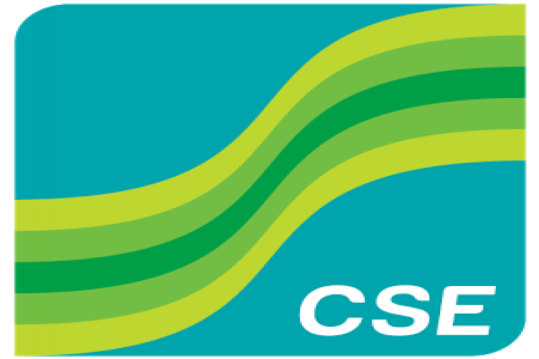
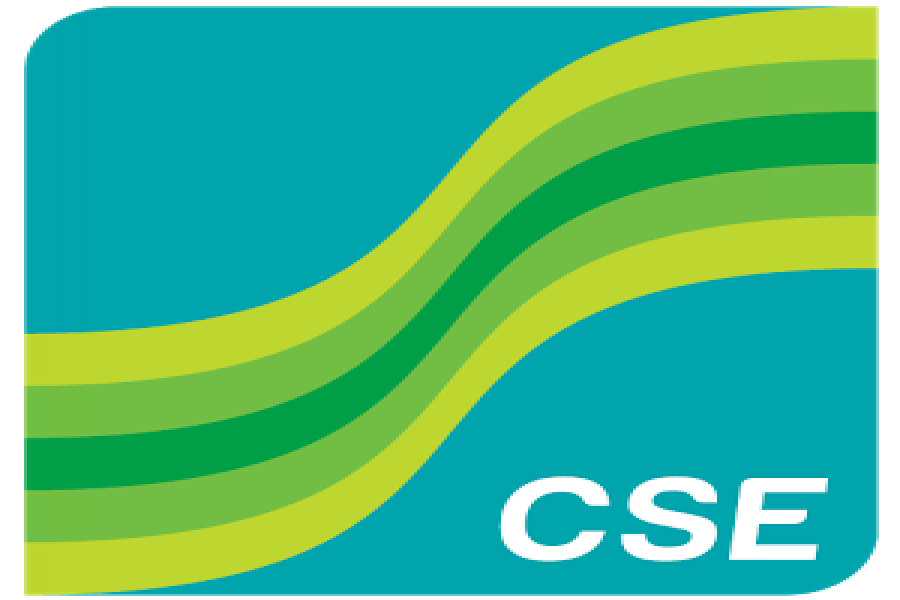

শেয়ার কী?
প্রথমে, শেয়ার কী তা জেনে নেওয়া যাক। ‘শেয়ার’ হল কোন একটি কোম্পানির মালিকানার অংশীদারিত্ব। যখন আপনি কোনো কোম্পানির একটি শেয়ার কিনে নিচ্ছেন, আপনি মূলত ঐ মালিকানা সম্পত্তি ও আয়ে ভাগ বসাচ্ছেন বা মালিকানার ক্ষুদ্র একটি অংশ কিনে নিচ্ছেন।কোম্পানির টাকার প্রয়োজন! প্রাথমিক বিনিয়োগের টাকা তোলার জন্যই হোক কিংবা ব্যবসা বড় করার জন্যই হোক; একটি কোম্পানির টাকার প্রয়োজন পড়বে। অর্থের পরিমাণ তারা বাড়াতে পারে দু’ভাবে। হয় তাদেরকে কোনো প্রতিষ্ঠান থেকে ধার নিতে হবে, নয়ত তাদের মালিকানার কিছু অংশ বিক্রি করতে হবে।শেয়ার বাজার কাকে বলে?
শেয়ার মার্কেট হল স্টক মার্কেট। যেখানে প্রাইভেট লিমিটেড কোম্পানিগুলি স্টক এক্সচেঞ্জে মাধ্যমে তাদের শেয়ার ক্রয় – বিক্রয় করে থাকে। উদাহরণস্বরূপ – আপনি কোন কোম্পানিতে শেয়ার ক্রয় করলেন, তাহলে আপনি সেই কোম্পানির শেয়ারহোল্ডার। এখানে আপনি যখন তখন আপনার শেয়ার বিক্রি করতেও পারবেন।শেয়ার কেনার দরুন আপনি সেই কোম্পানিতে বিনিয়োগ করতে পারেন। কোম্পানি যদি অগ্রগতি হয়, তাহলে শেয়ারের মূল্যও বাড়বে। পাশাপাশি মার্কেট শেয়ার বিক্রি করে লাভও পেতে পারেন। বিভিন্ন কারণজনিত একটি শেয়ারের মূল্য প্রভাবিত করে। কখনো এর দাম পড়ে যেতে পারে আবার কখনো দাম উঠতে পারে। দীর্ঘমেয়াদী বিনিয়োগে মূল্য পতন হ্রাস হয়।
স্টক এক্সচেঞ্জ বা শেয়ার মার্কেট কী?
স্টক এক্সচেঞ্জ মূলত মূলত একটি প্লাটফর্ম যেখানে কোম্পানিগুলোর স্টক বা শেয়ার কেনাবেচা হয় স্টক এক্সচেঞ্জে (যা স্টক মার্কেট নামেও পরিচিত। অনেকগুলো পণ্য একসাথে পাবার জন্য আমরা যেমন সুপারমার্কেটে যাই, তেমনি একটি স্টক এক্সচেঞ্জ হল স্টকের বা শেয়ারের সুপারমার্কেট, যেখানে ইচ্ছুক ক্রেতা বিক্রেতারা শেয়ার কেনাবেচা করতে পারেন। বাংলাদেশে বর্তমানে ঢাকা স্টক এক্সচেঞ্জ(DSE) এবং চট্রগ্রাম স্টক এক্সচেঞ্জ (CSE)- অনুমোদিত দুই প্লাটফর্ম। 
শেয়ারহোল্ডার কে/কারা?
শেয়ারহোল্ডাররাই হলেন কোম্পানির মালিক,যারা একটি কোম্পানির শেয়ার কিনেছেন। শেয়ারহোল্ডাররা কোম্পানি পরিচালনার জন্য একটি বোর্ড অব ডিরেক্টরস গঠন করেন। এই বোর্ডের সদস্যরা হলেন কোম্পানির নীতিনির্ধারক।কেন সব কোম্পানি জনসাধারণের কাছে শেয়ার বিক্রি করে?
একটি কোম্পানি বিস্তার ও উন্নয়নের জন্য মূলধন ও অর্থ প্রয়োজন। তাই মূলধন বৃদ্ধির জন্য জনসাধারণের কাছে শেয়ার বিক্রি করে থাকে। কোম্পানীর শেয়ারগুলি ইস্যু করার প্রক্রিয়াকে ইনিশিয়াল পাবলিক অফার (আইপিও) বলা হয়।বাংলাদেশের শেয়ার বাজারে শেয়ারের প্রকারভেদ।
প্রাইমারি শেয়ার এবং সেকেন্ডারি শেয়ার।প্রাইমারি শেয়ারঃ নতুন কোন কোম্পানিকে বাজারে অন্তর্ভুক্ত হতে হলে তাকে প্রথমে প্রাইমারি শেয়ার ছাড়তে হবে। শোনা যায় সবাই বলে প্রাইমারি শেয়ারে কোন লস নাই। সেকেন্ডারি শেয়ারে প্রচুর রিস্ক। প্রতিটি কোম্পানির শেয়ারের একটা ফেস ভ্যালু থাকে। কোম্পানি যখন তার শেয়ারটি মার্কেটে ছাড়তে চায় তখন সে ফেস ভ্যালুর সাথে প্রিমিয়াম যোগ করে একটি নির্দিষ্ট টাকায় শেয়ারটি অফার করে। যাকে আমরা IPO/আইপিও বা ইনিশিয়াল পাবলিক অফার বলে থাকি। ধরা যাক কোন কোম্পানির ফেস ভ্যালু ১০ টাকা এবং তারা ৫ টাকা প্রিমিয়াম সহ শেয়ারের দাম নির্ধারণ করল ১৫ টাকা। এখন যদি ঐ শেয়ার IPO এর মাধ্যমে পেয়ে থাকেন তবে প্রতি শেয়ারে দাম পরে ১৫ টাকা। এখন ইচ্ছা করলে এই শেয়ার সেকেন্ডারি মার্কেটে বিক্রি করতে পারবেন। সাধারনত দেখা যায় প্রাইমারি শেয়ারের যে দাম তার তুলনায় সেকেন্ডারি মার্কেটে এর দাম বেশি হয়ে থাকে।
সেকেন্ডারি শেয়ারঃ প্রাইমারি শেয়ার যখন কেউ বিক্রি করে দেয় তখন তা সেকেন্ডারি শেয়ারে পরিনত হয়। সেকেন্ডারি শেয়ার বাজারে ব্যবসা করতে হলে শেয়ার মার্কেট সম্পর্কে ভাল জ্ঞান থাকতে হবে। অর্থাৎ ব্যবসা করার জন্য ফান্ডামেন্টাল প্লাস টেকনিক্যাল এনালাইসিস সম্পর্কে ধারনা থাকতে হবে। এ ধারনা অর্জন করতে পারলে শেয়ার ব্যবসায় ভাল লাভ করতে পারবেন। আর যদি দীর্ঘমেয়াদে শেয়ারে ব্যবসা করেন এবং একে পেশা বা বাড়তি ইনকামের সোর্স হিসেবে ব্যবহার করতে চান তবে সেকেন্ডারি মার্কেট খুবই উত্তম যায়গা।
ব্রোকার দিয়ে শেয়ার কিভাবে কেনে
শেয়ার ব্যবসা করতে গেলে প্রথমেই তাদের মনে প্রশ্ন আসে কিভাবে টাকা দিয়ে শেয়ার কিনব, টাকা কি ব্যাংকে দিতে হবে, কাকে টাকা দিব বা কিভাবে লাভের টাকা পাব।শেয়ার ব্যবসা করতে হলে প্রথমে কোন একটি ব্রোকারে গিয়ে BO Account খুলতে হবে। BO Account খুললে ঐ ব্রোকার হাউস থেকে একটা ব্রোকার নম্বর ও BO Account নাম্বার দিবে। একাউন্ট খোলার পর ঐ ব্রোকারে টাকা জমা দিতে হবে। টাকা জমা দেবার পর যদি শেয়ার কিনতে চান তবে ঐ ব্যক্তিকে জিজ্ঞাসা করুন, যে শেয়ার কিনতে চান তার দাম কত। তারপরে ঐ দামে যদি শেয়ার কিনতে চান তাহলে বলবেন অমুক কোম্পানি ৫০০ কিনেন। তখন ঐ ব্যক্তি আপনার ব্রোকার নাম্বারটি চাইলে তা দিন। আবার বিক্রি করার সময়ও এভাবে বিক্রি করবেন। শেয়ার কিনলে বা বিক্রি করলে কোন কাগজপত্র দেয়া হবে না। অটোমেটিক ঐ শেয়ার আপনার একাউন্টে জমা হয়ে যাবে এবং একাউন্ট থেকে টাকা মাইনাস হয়ে যাবে।
শেয়ারের মূল্য কেন পরিবর্তিত হয়?
শেয়ারের মূল্য কখনো স্থির থাকে না। ঠিক যে সময়ে একটি কোম্পানির শেয়ার সাধারণ মানুষের কাছে বিক্রয় হয়, তখন থেকেই Free Market Forces এর উপর ভিত্তি করে শেয়ার মূল্যের হ্রাসবৃদ্ধি ঘটে।সাধারণত, স্টক মার্কেট শেয়ারের দাম বাড়ে কমে এর চাহিদা (Demand) ও যোগান (Supply) এই দুটোর উপর ভিত্তি করে। যদি শেয়ার বাজারে কোনো কোম্পানির নির্দিষ্ট সংখ্যক শেয়ার থাকে, তাহলে মানুষ যত ঐ কোম্পানির শেয়ার কিনতে চাইবে ততই সেটার দাম বাড়তে থাকবে। আর বেশি সংখ্যক মানুষ যদি ঐ কোম্পানির শেয়ার বিক্রয় করে দিতে চায়, অর্থাৎ যদি সে কোম্পানির শেয়ারের চাহিদা কমে যায়, তাহলে সেটার দামও কমতে থাকবে।
দাম বাড়ার এবং কমার পেছনে একটি গুরুত্বপূর্ণ ভূমিকা পালন করে কোম্পানির উপার্জন ও মুনাফার পরিমাণ। আপনার সেই চাইনিজ রেস্টুরেন্টের কথাই ধরা যাক। কোম্পানি যদি বেশ জনপ্রিয়তা পায় এবং বেশি মুনাফা করা শুরু করে তাহলে নিঃসন্দেহে আপনার এই প্রতিষ্ঠান অনেক বিনিয়োগকারী পাবে। আপনার প্রতিষ্ঠানে বিনিয়োগ করে ভালো মুনাফা পাবার আশায় সবাই সেখানে বিনিয়োগ করবে ফলে শেয়ার মূল্য বেড়ে যাবে।
লো রিস্ক মেথড
আমাদের দেশে সাধারনত আইপিও কে রিক্স ফ্রী বিনিয়োগ হিসাবে বিবেচনা করা হয়। সাধারনত যখন কোন ব্যবসা শুরু করা হয় তখন নিজের পুঁজি বা ব্যাংক লোন নিয়ে ব্যবসা শুরু করা হয়। পরবর্তিতে যখন ব্যবসা প্রসার কারার প্রয়োজন হয় তখন ব্যাংক থেকে লোন না নিয়ে সাধারন বিনিয়োগকারীদের কাছে কোম্পানির কিছু অংশ বিক্রি করে দেওয়া হয় এবং এই বিক্রিরির পদ্ধতির নামই আইপিও। আমাদের দেশে তরুন সমাজের মধ্যে আইপিও তে বিনিয়োগ করার প্রবনতা অনেক বেশী। তার কারন হলো আইপিওতে রিস্ক এর পরিমান প্রায় জিরো। একটি বি ও অ্যাকাউন্ট এর অধীনে একটি আইপিওতে আবেদন করা যায়। যারা যারা আইপিওতে বিনিয়োগ করবে তাদের মধ্যে লটারির মাধ্যেমে বিনিয়োগকারীর টাকা গ্রহন করা হয়। কারন একটা কোম্পানি যত টাকার শেয়ার বাজারে ছাড়ে তার থেকে আইপিওতে আবেদন বেশী পড়ে। আইপিও’র মাধ্যমে শেয়ার ক্রয় করতে চাইলে নির্ধারিত সময়ে ব্রকার হাউজে টাকা জমা দিতে হবে। টাকা জমা দেওয়ার ২০/২১ দিনের মধ্যে সাধারনত লটারির ড্র করা হয়। আপনি যদি লটারিতে জিতেন তাহলে আপনার টাকা গ্রহন করা হবে আর লটারিতে না জিতলে টাকা ফেরত দিয়ে দেওয়া হবে। অতীতে যে সকল বিনিয়োগকারী আইপিও’র মাধ্যমে শেয়ার পেয়েছেন তারা তাদের বিনিয়োগের উপর প্রচুর লাভ করেছে।শেষকথা
শেয়ার কি এবং কিভাবে শেয়ারে বিনিয়োগ করতে হয় তা হয়তো আপনি এরই মধ্যে জেনে গেছেন। তবে শেয়ারে বিনিয়োগ করতে গেলে আপনাকে আরো অনেক দক্ষ্য এবং কৌশলী হতে হবে। যে কম্পানির শেয়ার কেনার ইচ্ছে সেই কম্পানির আগাপাস্তলা আগে জেনে নেওয়া ভালো। যারা শেয়ার করছেন ওদের সাথে কথা বলুন..বুঝুন । চাইলে একটা ট্রেনিং ও নিয়ে নিতে পারেন। শেয়ার কিনে চোখ কান বুজে বসে থাকতে হয় না। সেনসেক্সের ওঠানামার দিকে খেয়াল রাখতে হয়..আপনার শেয়ারের কি অবস্থা সেটার খবর ঘনঘন রাখবেন।প্রতি ব্যবসাতেই লাভ লস থাকে এবং পরিশ্রমের দরকার। তাই যথেষ্ট মেধা ও বুদ্ধি খাটিয়ে ধীরেধীরে আপনি শেয়ার মার্কেটে অন্যান্য ব্যবসার তুলনায় তুলনামূলকভাবে অনেক ভাল প্রফিট করতে পারবেন এ আশ্বাস দেওয়া যায়।